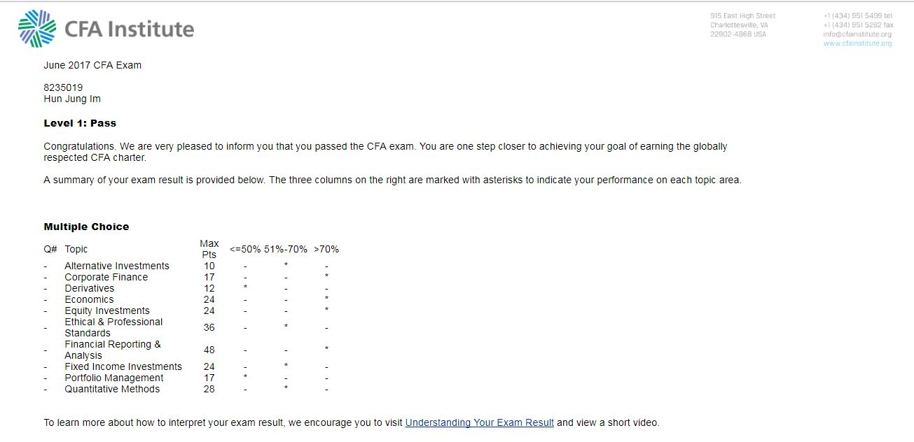

CFA Level 1
Chartered Finanical Analyst(CFA) is a professional designation given by the CFA Institute, formerly AIMR,
that measures the competence and integrity of financial analysts.
Candidates are required to pass three levels of exams covering areas,
such as accounting, economics, ethics, money management, and security analysis.
I am currently a CFA level 2 Candidate 2019